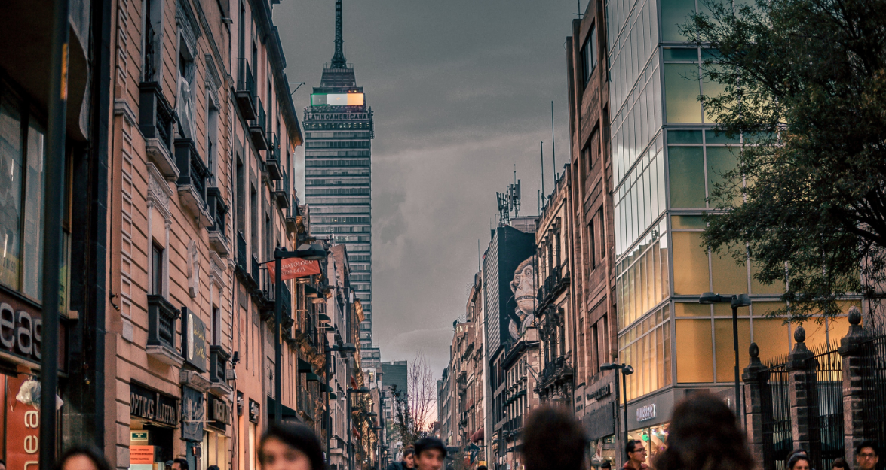
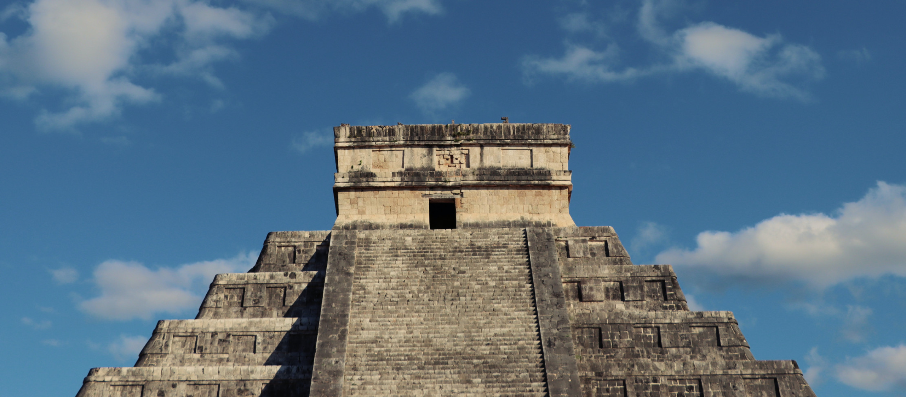

Post By: Eduard Panich 2023/10/06
Mexico City
Mexico City, the capital, is a bustling metropolis with a mix of modern and historic attractions. Explore the historic center, visit the National Palace and Metropolitan Cathedral, and experience the vibrant culture at places like Frida Kahlo Museum and Diego Rivera's murals at the Palacio de Bellas Artes. The city is also known for its delicious street food and lively atmosphere.
Photo by Jezael Melgoza on Unsplash
Post By: Eduard Panich 2023/08/02
Cancun and the Riviera Maya
The stunning beaches of Cancún and the Riviera Maya make this region a top tourist destination. Enjoy the turquoise waters of the Caribbean Sea, indulge in water sports, and explore the ancient Mayan ruins of Tulum. The area offers a perfect blend of relaxation and adventure, with vibrant nightlife in Cancún and eco-parks like Xcaret.
Post By: Eduard Panich 2023/07/17
Chichen Itza
Chichen Itza is one of the New Seven Wonders of the World and a UNESCO World Heritage Site. The ancient Mayan city features the iconic El Castillo pyramid, a testament to advanced astronomical and architectural knowledge. Visiting Chichen Itzá provides a fascinating glimpse into ancient Mexican civilization and history.
Photo by Luis Aceves on Unsplash
Post By: Eduard Panich 2023/07/05
Oaxaca
Oaxaca is known for its colonial architecture, indigenous cultures, and vibrant arts scene. The historic center is a UNESCO World Heritage Site, and you can explore markets offering traditional crafts and sample the diverse cuisine, including mole. Oaxaca is also a hub for traditional arts and crafts, such as pottery and textiles.

Photo by Seema Miah on Unsplash.